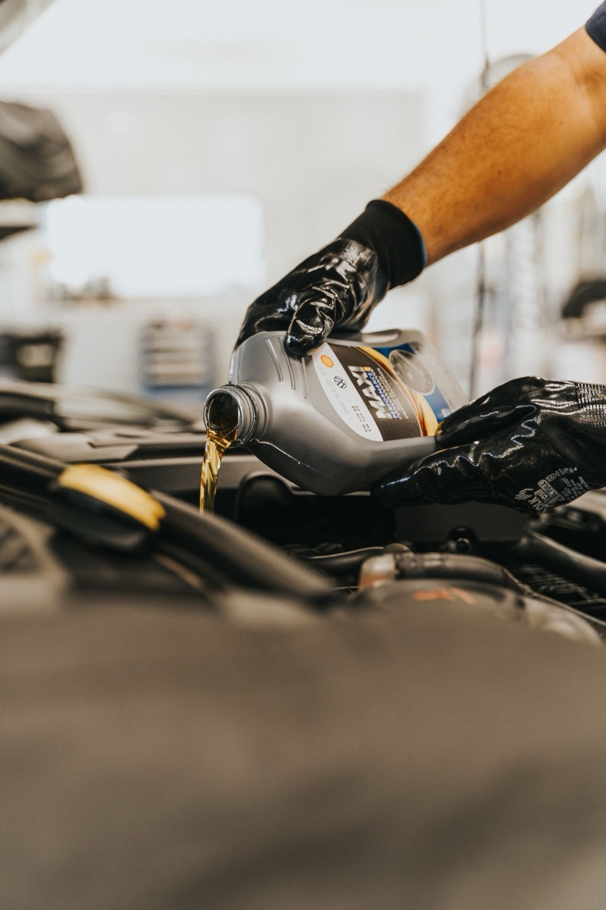
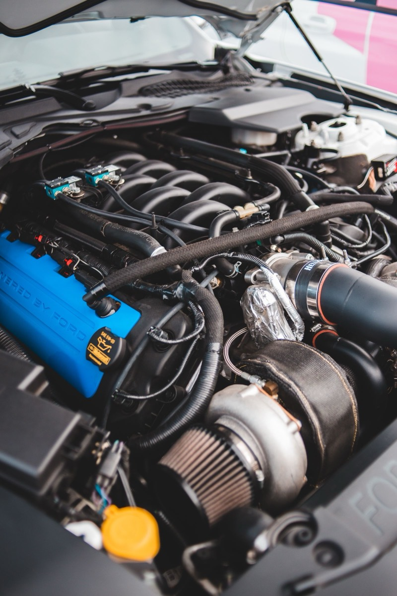

3.0L Duramax Service: The Oil Is a Licence, the Filter Is a Part Number
The 3.0L Duramax asks two questions at service time, and they are not the same kind of question. The oil is a licensing question: GM publishes a list of bottles it has tested, and a bottle that merely says it is suitable is not on it. The fuel filter is a part-number question: the same engine was bu
The oil for a 3.0L Duramax is decided by a GM licence list, not by a brand name, and the fuel filter is decided by which housing your truck was built with. ACDelco’s 13539108 is a bare cartridge element at $46.99; the 13543066 is a complete plastic quick-connect housing at $71.99. Both are genuine GM parts for the same engine, and only one of them is the part on your truck.
GM licenses dexos D in both 0W-20 and 5W-30, so two bottles on the same shelf can both be correct for a 3.0L Duramax. Schaeffer’s bottle says it is “specifically formulated and suitable for use in vehicles that require General Motors dexos D” — and Schaeffer’s does not appear on GM’s list of licensed brands. Mobil 1 ESP X2 does, with a licence number.

The 3.0L Duramax asks two questions at service time, and they are not the same kind of question. The oil is a licensing question: GM publishes a list of bottles it has tested, and a bottle that merely says it is suitable is not on it. The fuel filter is a part-number question: the same engine was built with two different housings, and the two GM part numbers are not interchangeable. Get either wrong and the truck still runs, which is what makes both mistakes easy to keep making.
Every price and review count below was read on a live Summit Racing listing on 17 November 2026, and every fitment claim comes from that listing’s applications page.
The oil is a licence, not a brand
GM runs a separate approval for diesel oils called dexos D at
gmdexos.com/brands/dexosd/index.html. It is not a marketing page — it carries a
supplier and an eleven-digit licence number for each entry, and GM’s about page
says unlicensed products “are not approved or recommended for use in GM
vehicles” and that using one “could cause engine damage that may not be covered
under warranty.”
Two details matter more than any forum thread. dexos D is licensed in both 0W-20 and 5W-30, so “what weight does a 3.0 Duramax take” depends on the truck, not the engine code — the filler cap settles it. And dexos D “meet[s] or exceed[s] the performance of GM dexos 2 engine oils”, so a diesel that ran dexos 2 moves over at its next change.
Mobil 1 ESP X2 0W-20, one quart → $11.99 · 5.0 (1 review) · checked 17 Nov 2026
ACDelco dexos D 0W-20, one quart → $11.99 · no reviews yet · checked 17 Nov 2026
Mobil 1 ESP X2 appears on GM’s licensed list twice, as DD40BAED816 and
DD40BCCB015, both 0W-20. It is $11.99 a quart at Summit with a single
five-star review. ACDelco’s own diesel dexos D is also $11.99 a quart and carries
no reviews at all. ACDelco holds several dexos D licences in 0W-20, one of them
listed as ACDELCO LIGHT DUTY DIESEL under DD0751IA015. Both bottles are
licensed products, which is the point: the licence is what you are paying for, and
the price is the same either way.

Why “suitable for” is the wording to slow down on
Here is the part of this that costs people money. Schaeffer’s sells an Advanced Light-Duty Diesel 0W-20 at $15.32 a quart, and its Summit description says the oil “is specifically formulated and suitable for use in vehicles that require General Motors dexos D.” That sentence reads like approval. It is not on GM’s licensed-brand list — no Schaeffer’s entry appears anywhere on the dexos D page as read on 17 November 2026.
That is not an accusation about the oil’s quality. It is a statement about what “suitable” does in a product description versus what an eleven-digit number on the back label does. GM spells out the check: “look for the dexos® icon on the front label and the 11 digit alphanumeric dexos® license number on the back label. Unless an oil package displays these two markings, the engine oil is not an authentic, licensed dexos® product.”
Liqui Moly’s Molygen 0W-20 fails the same test: $23.99, one five-star review, no Liqui Moly entry anywhere on GM’s list either. Both are good oils and neither is licensed, and the 3.0 Duramax is the engine where that distinction carries a warranty.
The fuel filter is two different parts
This is the mistake made on a Saturday afternoon. ACDelco sells two genuine GM fuel filters that both fit the 3.0L Duramax, and they are different components:
13539108 is a cartridge element, $46.99 with 4.75 stars across 6
reviews. Its spec sheet reads Fuel Filter Style: Cartridge, element included,
and no bracket, fittings or clamps — you keep the housing and replace the inside.
13543066 is a complete assembly, $71.99 with no reviews. Its specs read
Style: Stock, plastic housing, quick-connect on both inlet and outlet, and
Mounting Bracket Included: Yes — you replace the housing, not its contents.
ACDelco 13539108 fuel filter element → $46.99 · 4.75 (6 reviews) · checked 17 Nov 2026
ACDelco 13543066 fuel filter assembly → $71.99 · no reviews yet · checked 17 Nov 2026
The fitment pages do not separate them for you. Both carry Duramax rows — 301 applications for the cartridge, 294 for the assembly — and both list Silverado 1500 and Sierra 1500 in the 3.0L/183 engine size. So choose by looking at the filter on your own truck: a black plastic body with two quick-connect fittings is the 13543066; a metal can you open is the 13539108.
Reading a fitment page properly
The applications page is the most useful thing on a parts site and the most misread. It gives a Results Found count then rows naming make, model, years, engine size and engine family. Read Engine Family, not the count.
WIX’s WF10451 proves it. Its page returns 676 applications, 2-micron synthetic
fibre, 4.16 inches long, no bracket or fittings, $51.99, no reviews. The count
says nothing; the rows say everything: CHEVROLET SILVERADO 1500 | 2020-2022 |
3.0L/183 | DURAMAX L6 DIESEL, and again for 2023-2025 and 2026.
WIX WF10451 fuel filter, 2 micron → $51.99 · no reviews yet · checked 17 Nov 2026
The counter-example is worth carrying with you. WIX’s 33481 is $17.99 with 4.5 stars across 16 reviews — the best-reviewed cheap diesel filter in the results — and its fitment page opens on a 1995 Hummer and a fleet of Blue Bird school buses. Nothing on the search card says so.

The oil filter, where the prices spread furthest
Three filters in this cluster carry Duramax 3.0 rows on their fitment pages, and they are not close in price:
| Filter | Price | Reviews | Thread | Notes |
|---|---|---|---|---|
| WIX WL10351 | $9.99 | none yet | 1 in.-16 | canister, 522 applications |
| ACDelco 19391402 | $12.99 | 5.0 (2) | 1 in.-16 | 30 micron, bypass + anti-drainback |
| PPE 114000650 | $26.99 | 5.0 (5) | 1 in.-16 | 10 micron, 1.5 in. taller than stock |
K&N’s HP-1017 belongs on the same page for a different reason. It is $17.99 with 4.5 stars across 49 reviews — by far the most-reviewed oil filter here — and its 2,936-application fitment page opens on an Alfa Romeo Giulia. Its thread is M22 x 1.5, not 1 in.-16. It is the most popular filter in the search results and it does not screw onto this engine.
WIX WL10351 oil filter → $9.99 · no reviews yet · checked 17 Nov 2026
ACDelco 19391402 Ultraguard Gold oil filter → $12.99 · 5.0 (2 reviews) · checked 17 Nov 2026
PPE 114000650 Premium oil filter → $26.99 · 5.0 (5 reviews) · checked 17 Nov 2026
The PPE’s spec sheet is candid about the trade: Notes: 1.5 in. taller than stock
filter, for more filter media surface area. Integrated internal magnet to catch
metals. Where the filter hangs in open space that is free height; where it does
not, it is a clearance problem. Its fitment page names the 3.0L/183 Duramax L6
across Silverado 1500, Sierra 1500, Tahoe, Suburban, Yukon and Escalade rows,
207 applications in total.
WIX’s WL10255 is the one to be careful with. It is $7.99 with 4.5 stars across 8 reviews and its 2,756-application fitment page opens on a Buick Enclave 3.6L V6. What separates it from the WL10351 that does fit is a number the search card never shows: the WL10255 is M22 x 1.5 and the WL10351 is 1 in.-16, which are not the same hole. Same brand, same price band, two different engines.
The drain plug is not something a listing can answer
Every 3.0L Duramax oil change ends at the same place, and it is the one step where
the retailer cannot help. Summit sells its EZ Oil Drain Valves in three threads —
M12 x 1.25 (SUM-Z103), M12 x 1.75 (SUM-Z107) and M18 x 1.5
(SUM-Z104) — all three at $34.99, and none of them carries a vehicle
fitment page. Their applications page returns one result with no rows at all.
Summit EZ Oil Drain Valve, M12 x 1.75 → $34.99 · 5.0 (1 review) · checked 17 Nov 2026
The thread in your own oil pan is the fact you need and the one nobody publishes. The valve itself is a good part — forged brass and stainless, nickel plated, ball valve, seal included — but its own note flags that “If vehicle has recessed oil pan, may require adapter SUM-A107”, a $12.99 part with one review. Buy it after measuring, not before.
If the complaint is the noise, not the service
A large share of 3.0L Duramax video traffic is not about maintenance at all. It is about sound, and the part names repeat: resonator delete, downpipe, full system.
PPE’s turbo resonator delete is the cheap end at $116.99 with one five-star review. Machined 6061-T6 aluminium, Viton O-ring, steel retainer clip, described as “a direct, easy bolt-on replacement for the factory OE unit, no tuning or special tools are required.” Its fitment page carries 51 applications, 24 of them 3.0L/183 Duramax L6 diesel rows spanning Silverado 1500 2020–2025, Suburban and Tahoe.
PPE 115020400 turbo resonator delete → $116.99 · 5.0 (1 review) · checked 17 Nov 2026
Gibson 615640 resonator delete exhaust → $222.29 · no reviews yet · checked 17 Nov 2026
Gibson’s 615640 is the next step up at $222.29 — 3-inch stainless tubing, a
4-inch polished slash-cut tip behind the rear tyre, no reviews. Its fitment page
returns 34 applications and all 24 rows on the first page are 3.0L/183 Duramax
L6: Suburban 2021–2023, Tahoe 2021–2022, Yukon 2021–2022. The black-tipped
615640B is $240.29.
At the top, aFe’s Vulcan Series is $1,268.99 natural and $1,394.99 black —
304 stainless, particulate-filter-back, single-in dual-out with four 4-inch tips.
Its spec sheet carries the line that sets the scope of the job: Notes: Requires
cutting OE exhaust.
Is any of this legal in California?
The oil and fuel filters on this page are service parts and carry no emissions question at all. The exhaust parts do.
Gibson’s own application notes for the 615640 read “50 State Legal / California Emissions Compliant” — the clearest statement in this cluster, and the reason it is the one to reach for in a state that inspects.
PPE’s resonator delete is listed as an air-intake part, and neither its listing nor its application notes carry a CARB Executive Order number. That is not a statement that it is illegal; it is a statement that no EO number appears, so nothing on the listing supports it as California-legal — which is the question a visual smog inspection asks.
aFe’s Vulcan listing carries the standard red-flag line instead: “It is illegal to install parts or components that bypass, defeat, or render inoperative the manufacturers’ technology and design necessary to reduce vehicle emissions […]” A particulate-filter-back system on a diesel is what that sentence is written about.
Underneath it all is Cal. Veh. Code § 27156: no emissions-control device may be removed, altered or defeated. A part with an EO number has answered that. A part without one leaves it to you.
What to buy first
Read the oil filler cap, check that weight against GM’s dexos D list, then buy the bottle whose back label carries the eleven-digit licence number. For the fuel filter, look at the housing before ordering — cartridge at $46.99 or complete assembly at $71.99. For the oil filter, the extra three dollars on the ACDelco at $12.99 over the WIX at $9.99 buys a fitment page that names the engine family and specs listing both a bypass valve and an anti-drainback valve. And if the goal is the noise rather than the service, the resonator delete at $116.99 is a bolt-on with no cutting and no tuning.
Topics
- Engine & Intake
- Silverado 1500
- Duramax
- 3.0L